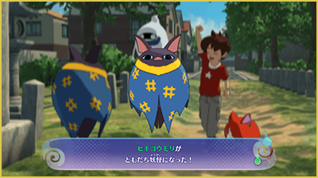
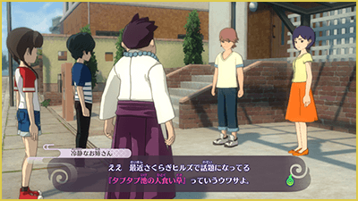

Introducción
Empezar a jugar
La primera vez que juegues, selecciona "Nueva partida" en la pantalla de título. Si ya tienes datos de guardado creados anteriormente, selecciona "Continuar" para seguir jugando desde donde lo dejaste.
- ※ Seleccionando "Cambiar idioma" en el menú, puedes cambiar el idioma en el que se muestra el texto del juego.
- ※ Si estás jugando a "Yo-kai Watch 4: We Look Up at the Same Sky", puedes ir a la eShop para comprar el DLC "Yo-kai Watch 4++" desde la opción "Extra" en el menú.
Guardar el progreso
En este juego puedes guardar desde la aplicación "Diario" de la Yo-kai Pad (en la zona abierta también puedes pulsar la cruceta hacia la derecha para abrir "Diario" más rápidamente). También puedes hablar con Ignóculo (el personaje que se encuentra en lugares como el Superhíper) para guardar la partida.
- ※ Se puede crear una sola partida por usuario.
- ※ Hay lugares en los que no es posible guardar, como aquellos donde aparecen Yo-kai enemigos.
Guardado automático
Durante el juego, el progreso se guarda automáticamente en determinados momentos. En la pantalla de título, puedes seleccionar "Continuar" → "Guardado automático" para reanudar el juego desde el momento en que se realizó el guardado automático.
Si cambias la hora de la consola...
Ten en cuenta que cambiar la hora de la consola puede impedirte usar la expendekai y aplicar restricciones durante varios días a determinadas funciones, como los días con multiplicadores de puntos expendekai.
Como jugar
Controla a Nathan y a los demás, explora la ciudad y habla con todo tipo de personajes. Cuando se produzca un combate, lucharás junto a tus amigos Yo-kai.
※ Algunos de los elementos explicados en el manual (como determinadas aplicaciones y otras funciones) no están disponibles al principio del juego, pero se desbloquearán conforme avances en la historia.
Hacer amigos Yo-kai
Durante una batalla, cuando un Yo-kai enemigo queda en estado de desmayo, puedes utilizar la "Extracción de alma" para obtener su alma. En la Agencia de Almas, utiliza la opción "Emparejamiento" para gastar las almas que hayas conseguido y que te presenten Yo-kai que puedes convertir en tus amigos.
※ También existen otras formas de hacerte amigo de los Yo-kai, como mediante misiones secundarias o la expendekai.

Misiones
Las misiones aparecen al hablar con personas que tienen el icono correspondienteo al avanzar en la historia. Hay tres tipos de misiones.
Cuando quieras consultar el estado de cada misión, utiliza la aplicación "Misiones" en el Yo-kai Pad.
Además, utilizando la "Guía de Naviwoof", puedes desplazarte fácilmente hasta tu próximo destino.

| Historia | Al completarlas, la historia avanza. |
|---|---|
| Peticiones | Son misiones que te encargan los habitantes de la ciudad y otros personajes. Al completarlas, recibirás recompensas como experiencia y objetos. |
| Casos extraños | Son casos paranormales publicados un el sitio web de fenómenos extraños. Al resolverlos, recibirás recompensas como EXP y objetos. |